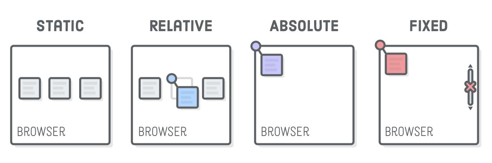
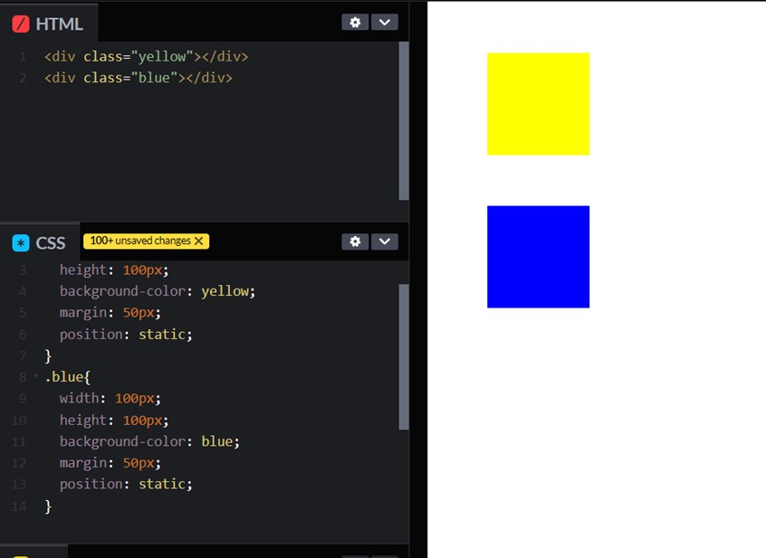
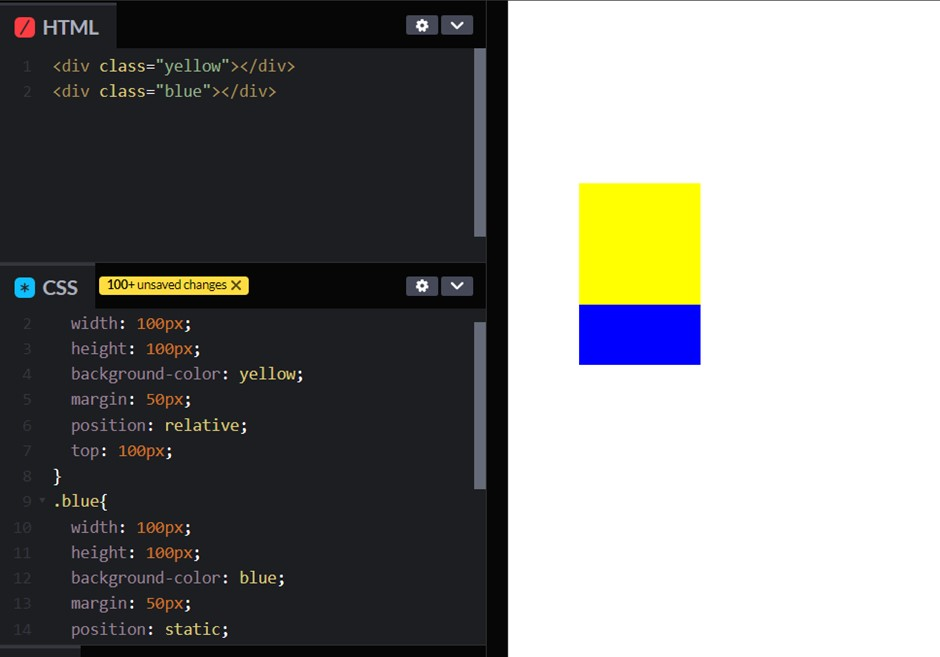
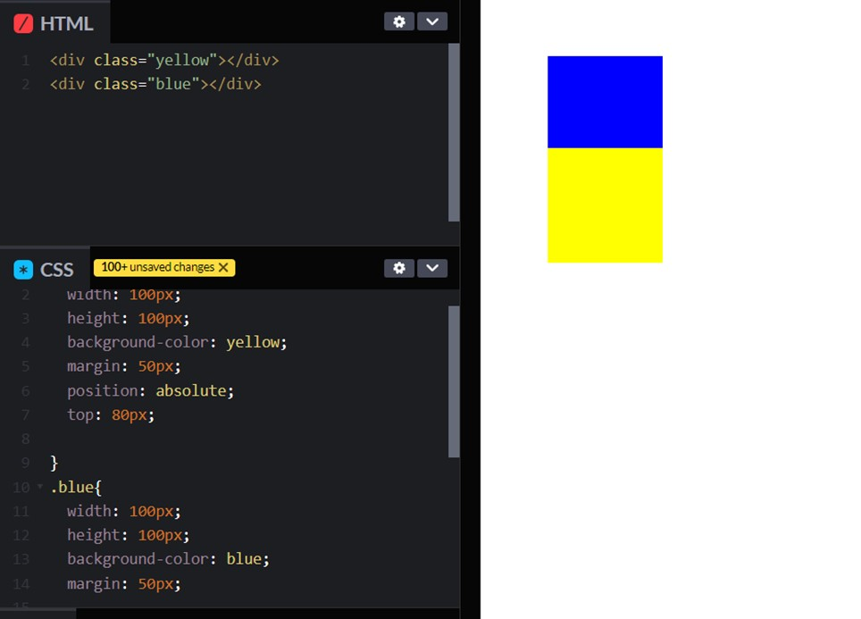

The Position Property
The Position Property
The position property is used to orientate elements on the page. There are five elements associated with the position property;static, relative, absolute, fixed, and sticky.

Static
This is the default element. Block elements are stacked on top of each other, and inline elements are place beside each other in sequential order.

Relative
This means “relative to itself” and will only have an effect if a related attribute is applied to it. The related attributes are; top, left, bottom, and right. Once the attribute is applied, the element will move in relation to its original (static) position on the page. This can be very valuable for tweaking the exact alignment of an element without having to consider the overall relativity of the page.
It works by adding the value to the given attribute direction. i.e. Setting a value to the left will cause the element to move to the right. Relative positioned elements can however, move over top of statically positioned elements, so it is something to be aware of.

Absolute
Absolute positioned elements are relative to the next parent element that has relative or absolute positioning. If there aren’t any, they are relative to the to the html element. It also uses the positioning attributes top, bottom, left and right. Absolute positioning removes an element from being affected by document flow – the position of other elements on the page.

Fixed
An element with a fixed position stays in the same place relative to the viewport and sits overtop the other elements. This means even if you scroll across or down the page, the element will stay visible and fixed on the same position of the screen, while viewport moves over the rest of the document. An issue with this positioning, is that it is possible to cover up important areas of documents with the fixed element, so it is something to be aware of.
Sticky
An element with sticky positioning acts as a static element until it has been scrolled past, then it will act as a fixed element if the parent element has space.
Source Material
css-tricks.com codecrunch.org codepen.ioJavaScript Basics
HTML, CSS, & JavaScript
These are the three main code languages, or components of a website. They can be described by relating them to components of a building:
HTML can be seen as the framework, or structural component of the web page, or the structure of a building in relation to our analogy. It’s a language that organizes the features of page into sections, just like a building is divided into different rooms. HTML does this by dividing the content into “blocks” which are seen in ‘tags’, such as div <div>, paragraph <p> or input <input> tags. It also contains all the content of the page such as text, images, videos and links. The content of the page could also be linked to the different features of the building, such as sinks, toilets, stairs, windows, although they are not the main structure of a building they are still a structural component in the same way text and images are.
CSS can be seen as the visual design of the webpage. It can be applied to the framework of HTML in the same way interior design can be applied to the structure of a building. CSS controls how the components of page will look, such a color, size, shape. In the same way, design features can be applied to a building, such as wallpaper, carpet, or different kinds of utility designs. JavaScript is involved in the function of a webpage, and user interactivity such as filling out forms, calculations, real time updates, and recording user data. This could be seen as the utility function of a house, such as the electrical components, plumbing or opening, closing and locking doors and windows.
So to put it all together, the HTML provides the framework for the JavaScript to be able to function on eg. It provides the light switch so the light can be turned off and on. CSS is the design of the light switch, it make sure the light switch is placed in an accessible area that is visible to the user and that it looks like a recognizable light switch.
CONTROL FLOW, AND LOOPS
Control flow is an aspect of programing which dictates the operation order of events. Relating that to our everyday life, when you do an activity such as doing your laundry, there are several steps that need to be done in order to complete this task. If you were do these steps out of order, you would not successfully complete the task. For example: if you folded or dried your laundry before you washed it the end result would be wet unfolded laundry.
Looping is also an important aspect of programing in performing tasks. A loop works by assessing a condition of an object or data. If that data meets certain requirements, then a process is applied to it/ a loop begins. If the data does not meet the criteria then nothing is done and the loop/process ends. This is important because if the criteria was not checked and the loop/process was set to 'on' then the loop would infinitely perform leading to a stack overflow (the program will crash). In our 'laundry analogy' the loop can be seen as done in a cycle of washing. Eg. Each item of clothing must be checked for conditions, eg. If it is dirty. If the clothing is dirty then it will be put through the washing cycle, however if an item of clothing is clean, then it will not be put through the washing cycle. When there are no items of dirty clothing left, then the washing cycle stops. If we did not check the status of the item then all items of clothing would be continuously washed, and once they had been put through the washing cycle, they would instantly be put through the washing cycle again even if they were clean.
DOM
The DOM (Document Object Model) is the live representation of a website. It has a hierarchical structure starting from broad sections of the page which encompasses all of the elements, divided into 'child' sections which contain more specific elements of a page. It contains the features of HTML, CSS and JavaScript, and entails how they interact with each other, and how all of the elements interact with each other. An example of how you might interact with the DOM is: a modal might become visible on the page when you click a button, revealing a an element containing HTML content that would otherwise be hidden.
ARRAYS AND OBJECTS
Objects contain variables called properties.
object = {
propertyOne: “variable1”
propertyTwo:”variable2”
}When accessing an object data you need to call on the object and the object property. Eg. If you called on an object property in the console you would use the code:
Console.log(object.propertyOne)The console would then display:
variable1If you called the entire object data you would use the code:
Console.Log(object)Then all of the properties in object will be displayed.
In contrast, the data in arrays are represented in numerical order starting from 0:
Array[“variable1”, “variable2”, “variable3”]This translates to: Array[0,1,2]
When accessing data from an array you need to call on the numerical value.
Console.log(array[0])The console would display:
Variable1In Arrays, the variables should all represent the same kind of variable, and the order is important. Where as in Objects, multiple types of variables can be described (eg. Numerical or text values), and different objects with the same property types can compared with each other.
FUNCTIONS
A function is a reusable process that is applied when called upon in the code. They can be either parameterized or parameterless. A parameterized method can be applied to one or more variables to give a defined outcome using the variable. We input the variables with the corresponding space within the function brackets For example, we could have a function that adds one variable to another, and then displays the answer:
function functionName(variableA, variableB)
{
answer = variableA + variableB
console.log(answer)
}When called upon:
functionName(1,3)Console output:
4A parameterless function will contain empty brackets (unless bound to an event where it will have none). This kind of function will perform as task without any input. For example we could have a function that displays “Hello” in the console when ever it is called upon:
Function functionName(){
console.log(“Hello”)
}When called upon:
functionName()
Console output: Hello
Functions are useful for simplifying and organizing code when we need to repeat an action, so instead of repeating the same code multiple times, we can condense it into a function and just call upon the function.
Example
Example
Example
Example
Example
Example